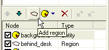
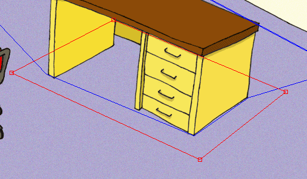
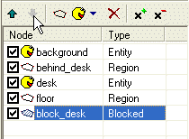

We already know that there can be multiple regions in the scene and that the regions affect the scene drawing order. Those are so called “layout regions”. But there can be also another type of regions, the blocked regions. As the name suggests, blocked regions define an area within the scene, which the actors cannot enter. In our sample scene, the actor can easily walk through the desk. If we want to avoid this, we will define a blocked region around the desk.
Let’s do it. Open our “MyScene.scene” file in SceneEdit. Make sure you have the “main” layer selected in the layer list and then click the “Add region” button. A new region will be inserted into the scene (we already did this in Step 3, remember?).

Now look at the properties window. Change the name to something more appropriate, like “block_desk” and change the radio button from “Layout” to “Blocked”.
OK, the region is now blocked; the actors will not be able to enter it. All we have to do now it to reshape the region to block the table. Change the shape of the region to match the one on the picture:

And that’s it. You may wonder about the scene nodes order. The blocked regions don’t affect the scene drawing and so they can be placed anywhere in the nodes list. But it’s a good practice to move the blocked regions to the end of the list. It’s not required but it helps one to navigate in the scene layout.
Move the “block_desk” region to the end of the node list using the “Node down” button.

Save the scene, quit the SceneEdit and run the game. Select the “MyScene” item and test our newly created scene. You can see that the actor is no longer able to walk through the desk. But he is not able go round the desk neither. That’s what waypoints are for. Proceed to Step 5: Waypoints.